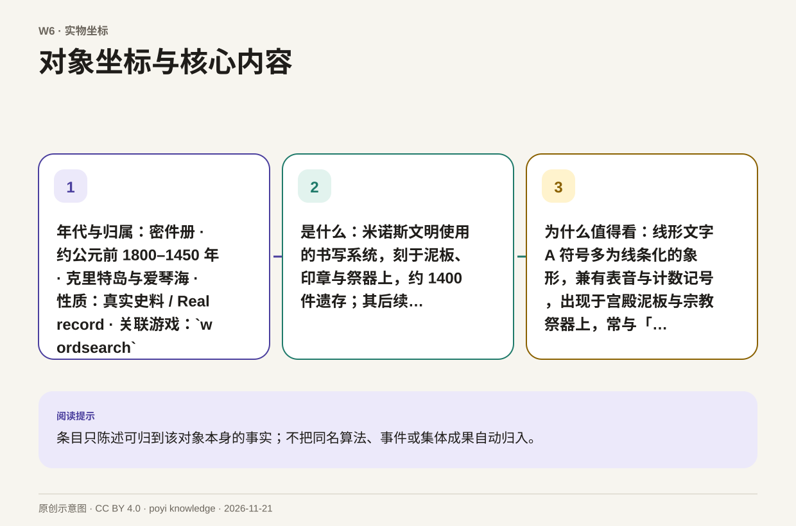
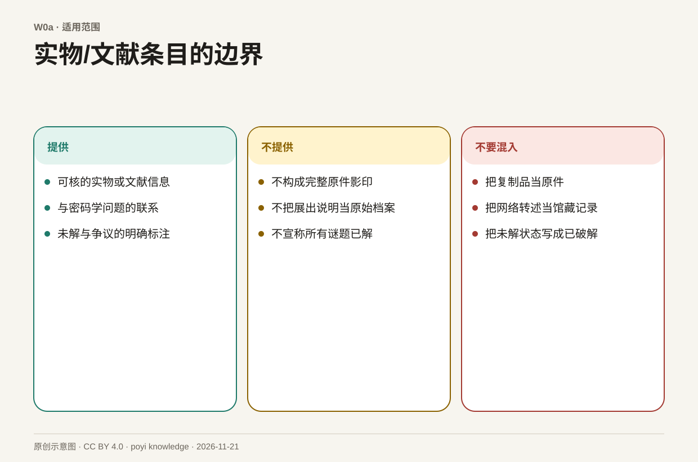
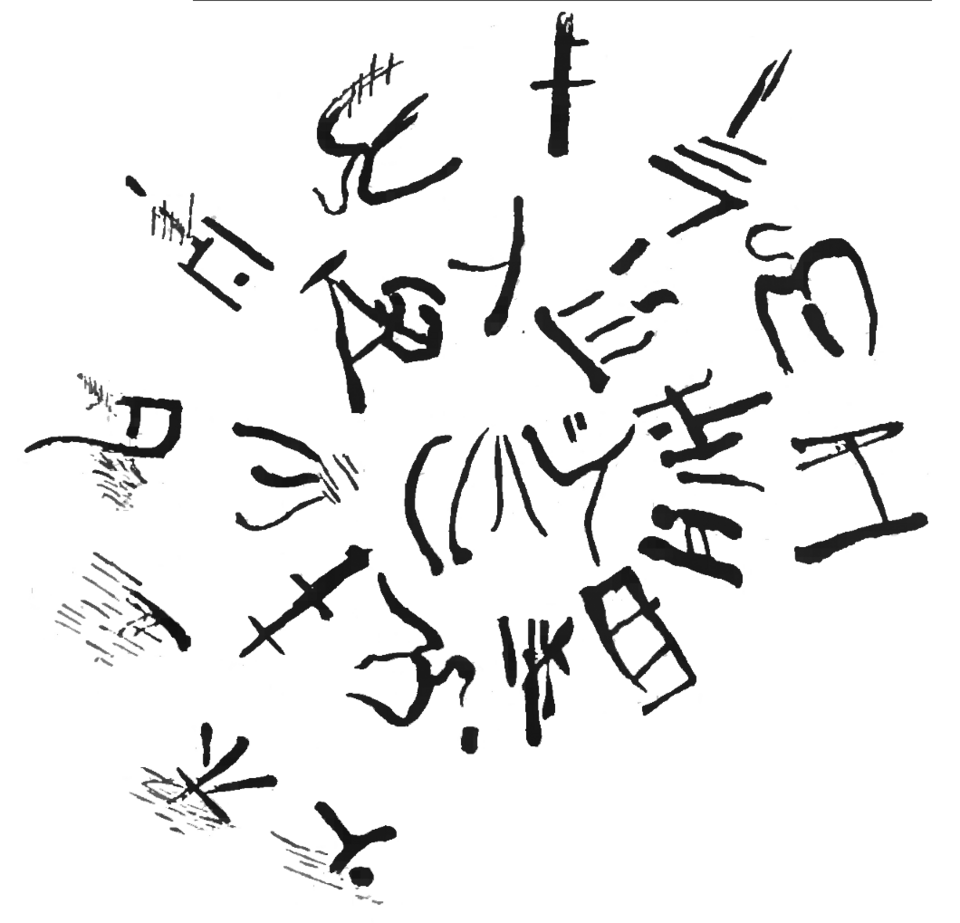

原理与机制
器物：线形文字 A（Linear A）。实物/文献：线形文字 A（Linear A）。米诺斯文明使用的书写系统，刻于泥板、印章与祭器上，约 1400 件遗存；其后续文字线形文字 B 已于 1952 年被破译，证明是希腊语，而线形文字 A 所记录的语言至今无法确定，被称为爱琴海考古最大的未解之谜之一。档案坐标：密件册 · 约公元前 1800–1450 年 · 克里特岛与爱琴海 · 性质：真实史料 / Real record · 关联游戏：wordsearch。该条目只陈述项目档案中可核的实物或文献信息，不把展签、网络转述或复制品当成原件。

为什么重要
这份材料值得保留，是因为它把抽象的密码学问题落到一个可观察的对象上：线形文字 A 符号多为线条化的象形，兼有表音与计数记号，出现于宫殿泥板与宗教祭器上，常与「祭献清单」关联；学者试以希腊语、吕基亚语乃至印欧语系以外的语言破译，皆未获共识。1952 年迈克尔·文特里斯破译线形文字 B 时，曾寄望借此反推 A，最终仍功亏一篑。它的价值在于提供问题入口，而不是替所有相关谜题给出答案。
应用与实例
阅读这件器物时，抓住三个问题：谁持有或操作它、它把什么结构约束变成可验证的步骤、失败时留下什么可见证据。实物参数只写馆藏、铭文或档案能支持的数值。
边界与攻击面
该器物本身不构成安全系统；原件、复制品与复原模型混用，铭文误读，或缺少馆藏记录时，不能据此推断年代、作者或用途。

历史与背景
密件册 · 约公元前 1800–1450 年 · 克里特岛与爱琴海 · 性质：真实史料 / Real record · 关联游戏：wordsearch。米诺斯文明使用的书写系统，刻于泥板、印章与祭器上，约 1400 件遗存；其后续文字线形文字 B 已于 1952 年被破译，证明是希腊语，而线形文字 A 所记录的语言至今无法确定，被称为爱琴海考古最大的未解之谜之一。
物证模型与不确定性
线形文字 A按输入（尺寸、材质、铭文、结构或操作记录）—结构（可见部件与连接关系）—操作（同时代的使用方式）—证据（馆藏、档案、铭文或技术手册）阅读。来源链包括：Wikipedia search entry for 线形文字 A；National Museum of China, Collection Highlights；Museum/collection record for 线形文字 A。
原件、复制品、复原模型和照片必须分开；年代、作者、用途、铭文读法有争议时并列保留；没有馆藏或档案支持的参数不写成确定值。
同名概念的分界
线形文字 A只对自身登记对象负责。与相邻条目的名称可能重叠，该条目不把别条的事实并入，也不用一个版本来覆盖另一个版本。
遇到同名对象时先查三项：类型（人物/事件/器物/术语）、时间、来源机构；三项不能同时对上，就当作不同条目处理。
来源等级与未核项
该条目来源账本包括：Wikipedia search entry for 线形文字 A（Tier 3）；National Museum of China, Collection Highlights（Tier 1）；Museum/collection record for 线形文字 A（Tier 1）。
Tier 1/2 只说明来源类型，不等于每条断言都逐页核过；正文中没有来源支持的日期、数量、角色和参数保持空白。二手概述与一手材料冲突时，以一手材料为准；争议不静默覆盖，保留在边界节。
读法：从对象到证据
读 线形文字 A 先固定对象：它是什么类型、属于应用安全工程的哪一段、与哪些条目相邻。再列证据：谁在何时说了什么、locator 在哪、是否为一手材料。最后写边界：哪些结论只是模型关系，哪些仍待核。
不要把目录位置当参数表，不要把标题当定理，也不要把一次示例当普适结论；这三类是该条目明确拒绝的误读。
复核清单
检查 线形文字 A 时逐项回答：对象类型是否固定；时间、地点、参与者是否各有来源；文本、器物或机构记录是否区分一手与二手；相邻条目是否被误并；没有来源的空白是否明确留空。五项中任何一项只能靠猜测，就停在“待核”，不把叙事写成证明。

逐步示例与核验
物证模型（不伪造代数公式）
1.输入：线形文字 A的尺寸、材质、铭文、结构或操作记录。2.结构：把器物拆成可见部件与连接关系，标出可测量项。3.操作：按同时代的使用方式复述“谁在什么条件下使用它”。4.证据：只写有馆藏、铭文或档案支持的参数；没有来源的数字留空。边界：器物条目回答“它如何工作、如何被使用”，不把机械结构强行写成密钥方程。
参考出处
- Wikipedia search entry for 线形文字 A. https://zh.wikipedia.org/w/index.php?search=%E7%BA%BF%E5%BD%A2%E6%96%87%E5%AD%97%20A
- National Museum of China, Collection Highlights. https://www.chnmuseum.cn/
- Museum/collection record for 线形文字 A. https://www.metmuseum.org/art/collection/search